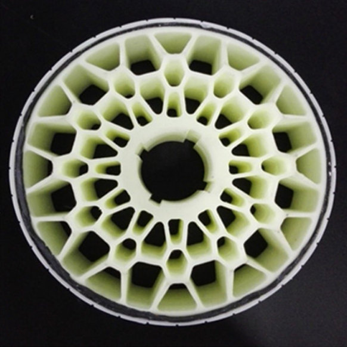
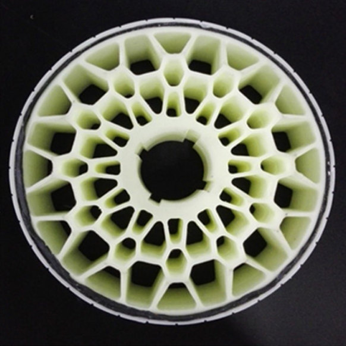
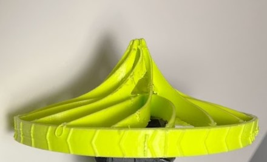
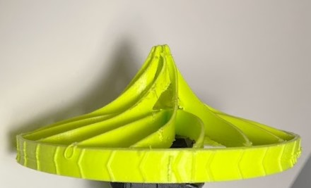
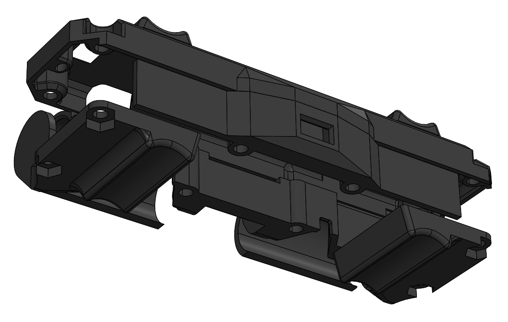
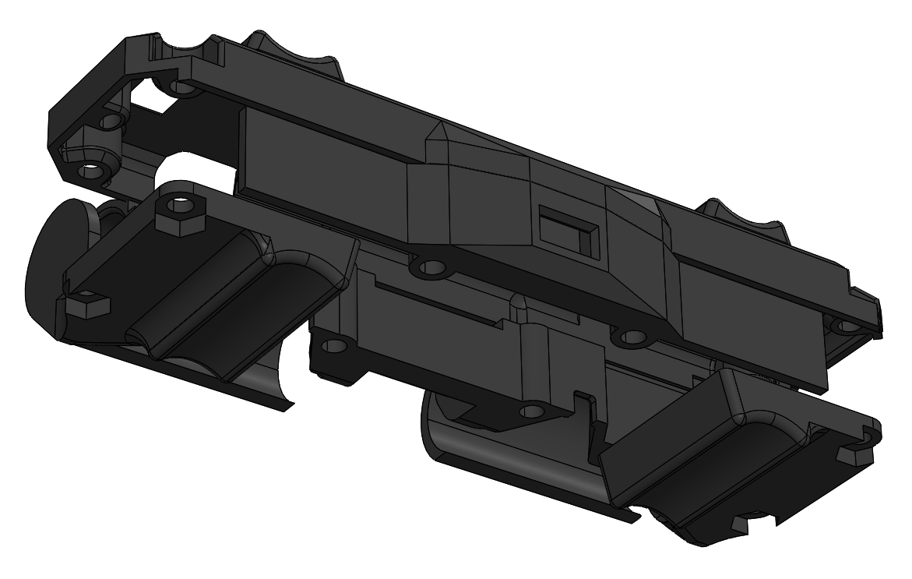

Throw Bot
A hyper optimized robot built to win
My second term of junior year had what was probably my favorite course thus far, MTE 380. Why is that? Because of how open ended and challenging it was. I've written about this before on my blog - but I think courses should strive to be more like this one. The rundown of the syllabus was teams of 3 - 6 will compete to complete a robotics challenge that will be announced in the second week. Your mark of the course is highly dependent on your competition score, which is calculated as:

Essentially the field is two 8ft x 8ft areas separated by a 3ft tall wall. The goal is to start on one side, and navigate towards a red pole on the other side of the field, requiring some method of crossing the wall. Part of the wall is made out of steel sheet metal, encouraging some sort of magnetic solution. Another part of the wall has a ramp up and down. It's worth noting that controlled flight is not allowed, and that you are allowed to leave behind parts as you go.
Off the bat, our team noticed that it's obvious that the priority of optimization should be:
1. Reduce time to complete
2. Reduce mass
And that there is a tradeoff in score you can calculate between the two, since they are related by square law. For example, if some upgrade doubles the mass, but saves ⅓ of the time to complete the course this is justified because:
We used this calculation throughout our design process to ensure we remained competitive compared to other strategies. If we found that it was possible to get a higher score by making a weight vs. time decision, we used this to make that decision. So lets talk about some other strategies.
As I normally encourage in open-ended design projects, each member of the team independently brainstormed ideas with no bias, then did research to inform their ideas more, and finally presented their ideas. The three main categories of ideas were driving up the ramp, climbing the steel wall, or launching over the wall - as expected. Sketching out rough concepts for each of these methods allowed us to do a rough score calculation, a look at that below:

As can be found by this analysis, jumping over the wall is pretty likely to give the best score. That being said, it relies on many assumptions. There may be faster ways to do any of these, and there might be lighter ways as well, but initial signaling told us to pursue launching over the wall.
I want to talk about perception and sensing before the rest of the robot, since we made a decision that fundamentally altered the entire robot design. A big problem with the launching design was not knowing where you were going to land, meaning that the search space for the pole is probabilistically larger than the other two methods (where you roughly know where your robot is in the field, and can more easily go to some location to start your pole search). To counter this, we looked at long distance range sensors that could see the full field. I'm a big fan of the VL TOF series from STM, and they had a new offering available that claimed to do up to 4m ranging with a 8x8 depth grid (VL53L5CX). What we didn't see early on, and what came back to bite us, was that it can only do 4m of ranging without a depth grid and in very specific lighting (realistically it was closer to 1m). A big downside was the sensor's firmware was so large it needed to be uploaded on boot over I2C from memory big enough to fit it, ruling out most Arduino Atmel based microcontrollers altogether.
But by far the biggest challenge with the launching design was how to make the robot survive on impact. To do this, we need to optimize the following equation to reduce force inflicted on the robot upon landing.
To reduce force, the impact time needs to be maximized, the mass needs to be reduced, and the impact velocity needs to be reduced. To increase impact time, we can look at the equation for the period of a spring which is based on spring stiffness and mass (assuming the crush structure acts like a spring). These are all knobs we control!
As you may have noticed, we now have even more incentive to make the robot light! We get points through the competition, and it reduces impact on the robot - a win win. This reduces the optimization problem and lets us hyper focus on making it as lightweight as possible.

Making stuff extremely light is quite a fun challenge, you can get into all kinds of cool materials and structural methods of saving weight. During the Throw Bot design, we prosecuted every gram added, and in the end, almost every part of the robot was pushed to the limit in terms of weight. For starters, I knew the heaviest components would be the motors and the batteries. It's clear from first principles that if you want a robot that can move linearly and rotationally independently you need two separate motors. Electric motors can have good power to weight ratios, but most of that power is useless because of how low torque they are. Therefore, I was looking for small motors with big reduction gearboxes. I had used these N20 motors during my internship at Matician and on Kurt (another project of mine), and they seemed perfect for this project. Using a calculator that considers drive speed, torque for accelerating, and torque for climbing onto the platform the pole is on, the optimal gear ratio can be found. In our case, that was 100:1 - but we also tested with 50:1 and 210:1. Later, a 2S battery is selected, which significantly over-volts the motor (8.4V/6V) but gives us performance gains at the cost of a potential burn out if it draws too much current.

The next challenge was finding a battery, and in parallel with this determining the smallest battery possible for our power budget. To do this I worked with Ethan, our electrical lead to cut down as much power usage as possible before selecting components for the PCB. This included using a super low power microcontroller (Artemis), having the power LED be activated by a switch, running sensors in low power mode, and switching from a linear regulator to a custom buck converter. In the end, for the battery to last for five 5 minute runs, around 160mAh would be needed. At that low of an energy usage, it wasn't the capacity that limited us, but instead the discharge rate. Since current could be up to 1.2A, and most discharge ratings of LiPo packs are 1C, we would need a 1200mAh battery.

It's very difficult to get batteries in Canada, a lot of suppliers like Digikey have a tiny selection in Canada, and other vendors don't want to deal with the shipping at all. By some completely random miracle we found out that disposable vapes use rechargeable Li-Ion batteries, and they have very high discharge rates (up to 10C!). Sadly we couldn't find a cell smaller than the 13300 (1S 400mAh) but this is still acceptable as it's only 8 grams and fairly easy to package.
To make the structure as light as possible, we made the risky decision of using the main PCB as a structural member, sandwiching the motors and sensors between it and an identically sized dummy PCB. PCBs are manufactured out of FR4, or glass fiber, and are surprisingly stiff. We tested this idea by drop testing an old Raspberry Pi strapped to a 150g weight onto concrete from roughly the same height as the robot - none of the components broke off or were electrically damaged, and it still booted. The motors are clamped between the two PCBs, centered for rotational symmetry. The TOF is soldered at a 90 degree angle, facing forwards but braced by both PCBs. Both motors have integrated encoders that slot downwards through holes in the bottom board. Finally, the batteries are positioned at the back of the electronics sandwich, where they are as safe as possible from impact because of a tail that protrudes out of the back. There is almost no space left in the completed robot, things are packaged together as tightly as possible without sacrificing DFA or repairability.

The gearbox output shaft is only supported by two tiny plain bearings, and from reliability testing at a previous internship I've seen first hand how they slowly wear down into slots, destroying the gears in the process. To reduce this, the motors are pressed into a custom machined bearing block made out of 7075 aluminum. The fit is tight, and even though the shaft is only supported by the one ball bearing, when loaded right it can take a majority of the force. In an attempt to do just that, the wheels are curved inwards such that the contact patch is inline with the bearing - this however does not help as much when the robot hits the ground at an angle. Many people thought it was strange I used aluminum for this part instead of plastic since we were so focused on reducing weight. Well in a prototype made for drop testing this part was plastic - and it was the first point of failure. In addition, having a proper reamed hole for a bearing press fit is also important for bearing life. On top of this if you think about the motor mount as a spring in parallel with the brass gearbox plate, in order for the bearing to take a significant portion of the load the motor mount needs to have a high relative stiffness compared to the gearbox plate. Brass is very stiff, around 40% stiffer than 6061 and 30% stiffer than 7075. There are more complexities to this argument including the tolerance stackup of all these parts, but it's beyond the scope of this post.
The next part to be designed was the wheel and in turn the wheel hub. The wheel hub is another tiny machined piece of aluminum that interfaces with the gearbox D shaft, and locks onto the wheels with two keyed cuts. Two tapped holes accept set screws that reduce the hertzian contact stresses significantly compared to a typical single set screw design.

Wheel design was fundamental to the success of the project, as noted earlier, increasing the time of impact is crucial to a safe landing. To do this a wheel needs to be designed such that it can crumple with just the right energy. If it crumples too little, energy instead gets absorbed by the other parts in series with the wheel - too much and the robot body or batteries hit the ground. And as you increase the wheel size, the weight goes up with the radius squared - it's worth noting that the wheels ended up being the heaviest single component on the robot. The easiest material available to prototype fast was TPU which could be printed on my FDM printer, although foam and casting options were discussed.
In order to test some of the crazy wheel ideas I had, I needed a way to measure the impact. To do this, I made a mass dummy that had a similar mass and COG to the revision of the robot at the time. I rigidly secured an IMU on the mass dummy to log impacts so that I could quantitatively measure the performance of various wheels. Near the end of the project I had a perfect replica of the robot with no electronics, but identical mass, COG, and moments of inertia. An example drop with a super early version of the wheels is shown below with the acceleration plot below it.


I figured this problem has probably been solved before, so did a bunch of research on crush structures, shock absorbing wheels, and rugged robots. I found a company called Recon Robotics that actually makes a robot called ThrowBot (we came up with our name and rough design before finding the company funnily enough) and there were some pretty good pictures of the wheels (left) that I could copy and test. There was also a cool wheel design (right) on the Boston Dynamics Flea robot from 2012, I feel like it doesn't get enough credit - it's super cool!
 

So I decided to try and beat both of these results. Obviously this is a different use case and manufacturing method for these wheels, and I never expected the other designs to be optimal. One thing that was obvious to me was that the stiffness should be radially consistent, meaning no matter where you land on the wheel it shouldn't change too much. Also, the spokes should crumple in a repeatable and controlled way. The design that comes to mind is sort of like leaf spring suspension, patterned radially. By pre-buckling the spokes, they compress in a predictable way. I played around with curvature, spoke count, and thickness over 8 different iterations to hone in a stiffness I was happy with.

I already talked about how the wheels curve inwards such that the contact point is inline with the bearings, but let's talk about the rest of the front profile. Originally I had curved the outside of the wheel so that if the robot landed on the side of the wheel, it would tip over automatically. In practice though, there was nothing to absorb shock for a side impact. To solve this, I curved the spokes back outwards into a spike reminiscent of a Roman Chariot. The spike was constrained to a certain shape to ensure the COG of the robot was always outside of the support polygon formed by the wheel and the spike. It also had to be designed such that its stiffness was similar to the wheels. This took 3 iterations to get right, with the final design only using every other spoke in the spike (which can be seen upon close inspection of the picture below).

 

The tail was another critical part, and was exposed to impact by definition of its functionality. To react the torque from driving, and allow the robot to move around without just spinning out, something needs to hold the body relative to the floor. Since it needs to protrude from the safety zone the wheels provide, it also needs to be a crush structure. I went through 4 iterations of tail design, the first being curved to keep the robot body level, and then after ditching that design it ended up being straight - accepting that the robot would be at a 30 deg angle in either orientation depending on landing. Having an ambidextrous robot also means you don't need space and time to flip the robot over if it's upside down - you can just start searching as soon as you land. The design of the crush structure was a bunch of tapered hexagonal crush structures that could both bend and buckle depending on impact. At the end of the tail is a PLA ball that reduces friction on the ground and allows the tail to be shorter, reducing mass.

Finally, the enclosure was designed to keep everything safe from impact. Depending on impact direction and velocity, the wheels could actually crush enough to hit the body. The worst impact would be landing on the finish pole, hitting the wall, or really anything that can fit between the wheels. If this happened, I wanted a lightweight enclosure to absorb the energy instead of say an SMD capacitor. Most of the enclosure is 2 or 3 nozzle diameter widths thick, and is quite weak. It was made to be as light as possible, and was sacrificial, being replaced multiple times during testing. The enclosure also has guides that keep it retained in the launcher, which look like 4 semi circular profiles on the top and bottom.
 

The final robot weight was 120 grams, much lighter than the 250 gram prediction made when selecting designs.
Originally the launcher design was the responsibility of another member of my group, but he only got a prototype done before running out of time. This left around 6 days to go from the prototype which weighed ~800g to something that was more competitive, with a goal of <300g. The prototype was constructed with pretty chunky aluminum extrusion that weighed a ton, as well as not being very stiff in bending and having a pretty tippy base. That being said, it did help us validate our projectile motion math and figure out parameters like energy efficiency and landing variability.
An obvious place to start is cutting out the extrusion with something much lighter - ideally something that is straight, smooth, can withstand buckling loads and tensile shock loads. The obvious material here is carbon fiber, it's insanely strong in tension to handle the shock loading, and stiff enough to withstand buckling under the springs, carbon tubes are also manufactured on mandrels keeping them very straight. Mounting to carbon fiber is a bit trickier without breaking out expensive resins, so I resorted to clamping and using hoop stress to not crush the tubes (similar to cinematic camera equipment) as well as JB weld, which was shockingly resilient.

I wish I could've found a lighter solution to the springs, but with such limited time I wanted to stick as close to the prototype as possible. The springs are held captive, and are twisted slightly to encourage them to buckle when they're crashed into the end stop. Reducing the shock loading when the springs crash was pretty important, the part at the end shown above is stripped down for weight and is only epoxied into the tube.
The release mechanism was developed by my group member who made the launcher prototype. Its tapered shape allows it to take almost zero force to pull out, ideally the angle of the taper is at the slip angle (inverse tan of the coefficient of friction) but since friction is unknown it had to be guessed. A servo motor horn pulls the pin up 3 seconds after the launcher is turned on, but due to a last minute rule change we were allowed to do a manual release. That saved us all the weight of a servo, battery, arduino, and boost converter - but made the project less cool in my opinion.

Finally the base, which was constructed from the offcuts from the carbon fiber tube and designed to be as light as possible. The method of mounting the tubes to the base print ended up being a weak point in the launcher design, as the reaction force from releasing the robot would flex the legs apart, causing the entire launcher to jump up. Eventually we realized that we could get more energy out of the springs if we taped the legs to the ground, which made the launcher less excited and more consistent. The launcher rail sub assembly mounts to the base with a pivot and a slot, allowing a range of launch angles from 40 deg to 70 deg. The cherry on top is that all hardware used on the final launcher was 7075 aluminum, which ended up saving around 10 grams.
The final weight of the launcher was 270 grams bringing the total combined weight to 390 grams.

Ethan of Big Crete Engineering and Omar handled PCB design and electronics for the project. I'll skim over it for context.
As mentioned before we made a custom PCB to act as the robot's chassis, this was a decision mainly to package everything as tightly as possible and to reduce weight. It also coupled into the earlier decision of using the 8x8 ToF sensor (VL53L5CX) which required us to load its firmware on bootup, making us use a microcontroller more powerful than an Arduino. Arduino Uno's Atmega328 only has 1 kilobyte of EEPROM, but the firmware for the sensor alone is 90 kilobytes. We selected an Artemis Module from Sparkfun, built on a Cortex M4-F. It's packaged very nicely, including most of the peripheral components with an EMI shield and antenna built in. It has bluetooth connectivity, a whole megabyte of flash, and up to 96MHz clock speed (6X faster than an Arduino Uno). The only downside is the terrible soldering situation, the module is a PCB with 58 square pads broken out underneath. Some of the pads are so close they break the design rules for JLC PCB, and as it would turn out a couple of our boards were missing solder mask in tight areas. It was also difficult to tell when it fully reflowed without a CT scanner or X-Ray because all the connections were flush under the board.
A rough outline of the electronics diagram is below. Essentially it's a ToF sensor and IMU sensor on an I2C bus, and then 2 ABN encoders that connect to interrupt lines on the Artemis. Motor control is handled by two H bridge drivers from TI. In terms of power there's a 3.3V buck converter, and a power led inline with a button, intended to reduce the 20mA constant power draw.
The biggest set back our project had was with the integrated encoders on the motors we selected. As mentioned previously I had selected these N20 gear motors, and two brands sell them with integrated hall effect sensors and a diametrically magnetized disc magnet. Those two brands are Pololu (a very reputable brand) and DFRobot (a not so reputable brand) but hey they looked identical and the DFRobot ones were 5X cheaper all things considered. Our first PCB lasted a good month of testing and programming, and only died when we had an accidental short. This led us to order the parts for a second one, which seemed to slowly lose functionality as it was turned on. First the ToF died, then the IMU, then the encoder signals and finally the Artemis wouldn't communicate at all. With 2 weeks left before the competition, still not knowing what went wrong with the robot, we ordered parts for 3 more just to be sure. The next one we built lasted a total of 1 hour before drawing the current limit from the power supply. By progressively removing components and unit testing them, we noticed that the hall effects on the motor encoders did not match, and a couple of which we couldn't even find on Google. It appears that DFRobot just randomly picks 1 of 3 hall effect options when making these encoders, and on most of our motors they burnt out and shorted the 3.3V rail after some run time. So on the 4th board, 2 days before competition, we wired everything except for the encoder wires. This meant ditching any sort of path planning or straight driving algorithms. Putting more load on our software team this late in the project was asking a lot, but they pulled it off by using the ToF depth image to steer towards the pole, regardless of motor speeds. This PCB worked fine for the rest of the competition, and we still had a backup. Don't ask about the budget.
As mentioned before, the selection of our fancy ToF sensor drove the selection of the Sparkfun Artemis module. By default it runs mbed OS, a real time operating system that runs on the embedded M4F processor.
I didn't do any work on the software side so I won't go into much detail, this was done by Stephen and Jessie. Essentially the program we had by the end was a simple state machine shown below. On power up the robot would continuously monitor the magnitude of the accelerometer, waiting for it to be a significant value over 1G, representing the launch. To be as fast as possible we would wait for a magnitude of acceleration approximately equal to 1G, meaning the robot has settled.
At this point the robot takes a depth image, we lengthened the exposure period to maximize range so this takes around half a second. The depth image might look something like below.

Once we have the image, we compute a convolution with a filter developed by Stephen. The convolution is optimized to look for a pole, and output a distribution that "points" to it. If the output of the convolution doesn't show a high confidence of a pole, the program continues.

The robot will turn by 45 degrees (the FOV of the sensor) and repeat this process until it's done a full 360 degrees. At that point it turns randomly and drives forwards a meter, hoping to get within range of the sensor. As mentioned at the beginning of this post, the "4m range" was only in a dark room with a white target. In reality we were competing in a bright classroom and searching for a red pole. With default firmware settings, range was around 0.9m, but after a longer exposure period and looser confidence intervals we boosted it to around 1.5m.
In what seemed like classic Waterloo tradition, the day before was a practice session from 1:00pm - 5:30pm. After seeing the state of the teams the day before, the TA decided to stay as long as needed. Near midnight our software was finalized and we started doing full integration tests on the field. We quickly realized that the floor in the competition room was super dusty, and our robot would slide quite far from it's initial impact location. This meant that even if the catapult was dialed in to get the robot close to the pole, we wouldn't know where it would tumble. We tried some crazy things like double sided tape wheels, weld filler rod spokes, and spinning the wheels in midair for gyroscopic precession. We gave up on these approaches and decided that if the robot tumbled we would just repeat our attempt. Attempts could be repeated without penalty if under 10 seconds had passed, and by the time the robot landed and tumbled it would only be around 8 seconds. This was a risky strategy but allowed us to continuously reattempt until we had a good run. We knew about this rule at the beginning of the competition, but weren't confident we could land on the other side in under 10 seconds. This ended up being a total cheat code, allowing us to get our perfect cannonball run. At 5:30am our team knew we could land within a meter roughly every 4 attempts. Rumor has it the last team left at 7:30am. Competition started at 9:30am.

Everyone had a role, everyone knew how to execute in order to get each run under 10 seconds. The first 2 tumbled, the third was facing the wall, but the fourth was almost perfect. At 11 seconds we were not only the fastest team by considerable margin, we were also the lightest. This theme of optimizing and balancing weight and time trade offs brought us the record performance score, beating the 2016 record by 52% and beating the next highest score in our class by ~6 times.

After the competition we decided to do some destructive testing, dropping the robot from the seventh floor of our engineering building. Miraculously we didn't have a battery fire and all the electronics remained functional! A small piece of the enclosure holding one of the batteries in broke off. One of the gearboxes also took a side impact shearing gear teeth somehow - but the other one works perfectly fine.


At face value this was just a competition amongst our classmates, and for many it was just doing what was required of them to pass the course. But to me, it meant pushing a complicated system to its limits, and squezzing every last bit of performance (and weight) out of it. I don't know if I've ever had a robotics project with such complexity come down to such a tight deadline. I also think we got very close to the optimal design, that being said I am super curious to see what future teams do to beat our score.